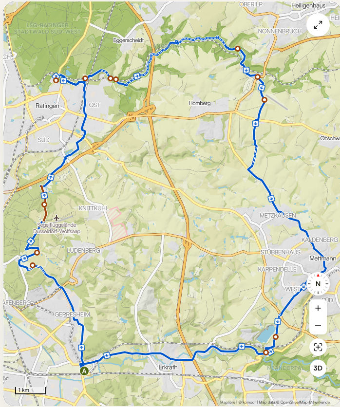

Radtour 2026 · Freitag 19. Juni
Freitag, 19. Juni 2026
Düssel und Angertal · 39,4 km · Start/Ziel: Hotel niu, seven · Gerresheim

🗺️ Tour auf Komoot öffnen📍 Wegpunkte
| Ankunft | Aufenthalt | Km | Wegpunkt | Typ |
|---|---|---|---|---|
| 09:30 | 0,0 | Start · Hotel niu, seven · Gerresheim | 🏨 Hotel | |
| 09:56 | 1:45 h | 6,9 | Neanderthal Museum | 🏛️ Museum |
| 11:48 | 8,1 | Blick auf Bergisches Land | 📷 Foto-Stop | |
| 12:29 | 18,1 | Gut Zehnthof | 🍽️ Einkehr | |
| 12:31 | 19,0 | Hofermühle | 🏞️ Mühle | |
| 12:36 | 20,4 | Angerbachtal bei der Hofermühle | 🌿 Natur | |
| 13:00 | 1:30 h | 25,9 | Restaurant Auermühle 📞 02102 89298 · ⚠️ Reservierung! | 🍽️ Mittagessen |
| 14:59 | 33,6 | Kastanienallee / Pferderennbahn | 🐎 Aussicht | |
| 15:05 | 34,9 | Kastanienallee an der Galopprennbahn | 🐎 Sehenswürdigkeit | |
| 15:20 | 39,4 | Rückkehr · Hotel niu, seven | 🏨 Hotel |
🏛️ Sehenswürdigkeiten
🏛️ Neanderthal Museum
- Einziges Museum am originalen Fundort des Neandertalers
- Öffnungszeiten: Di–So 10–18 Uhr
- Eintritt: ~11 €/Person
🏞️ Angertal
- Naturschutzgebiet entlang der Anger
- Hofermühle & Auermühle: historische Wassermühlen – ruhige Waldstrecke
🐎 Galopprennbahn Düsseldorf-Grafenberg
- Kastanienallee mit schöner Aussicht
🌙 Abend – zwei Optionen
🔭 Option A – Planetarium
VeranstaltungPink Floyd – The Dark Side of the Moon
Ortsnh-Planetarium · Erkrath-Hochdahl
📍 Direkt an der Freitags-Route!
📍 Direkt an der Freitags-Route!
Uhrzeit19:30 Uhr · Dauer: 60 Min.
Eintrittregulär € 15,– · ermäßigt € 12,–
Altersfreigabeab 14 Jahren
BeschreibungDas Kultalbum von 1973 als 360°-Planetariums-Show – Musik mit visuellen Weltraumeffekten in Surround Sound. Produziert von NSC Creative / Hipgnosis.
Termine⚠️ Aktuell nur bis April buchbar – Juni-Termin prüfen!
Ticketssnh.nrw → Jetzt buchen ↗
EssenNach der Show (ab ~20:45) → Abendessen auf der Rückfahrt ↓
🍣 Option B – Little Tokyo
EmpfehlungKushi-Tei of Tokyo – Immermannstr. 38
TypAuthentisches Izakaya · Teriyaki-Spieße vom Holzkohlegrill
Preis€€ – Mittel
Reservierung⚠️ Erforderlich!
🍽️ Nach dem Planetarium – Abendessen (ab ~20:45)
Nur relevant bei Option A (Planetarium). Show endet 20:30 → ~15 Min Rückfahrt → Ankunft ca. 20:45.
⭐ Empfehlung – Herr Knillmann
AdresseAlter Markt 1a · Gerresheim
📍 Direkt am Hotel!
📍 Direkt am Hotel!
KücheModerne deutsche Küche · Pasta, Schnitzel, Bowls, Veggie/Vegan · alles frisch, kein Convenience
Preis€€ – moderat
Freitagbis 24:00 Uhr – kein Zeitdruck!
GruppeReservierung für 14 Personen möglich
Warum?Hausgemacht, regional (Metzgerei Ludwig, Bäckerei Schmalz), familiärer Stil – für jede Essenspräferenz etwas dabei.
Reservierung⚠️ Unbedingt für 14 Personen vorbuchen!
Webherr-knillmann.de ↗ · Tel. 0211 22 086 790
🍕 Alternative – Trattoria da Giovanni
AdresseBahnstr. 25 · Erkrath
📍 Auf dem Rückweg vom Planetarium
📍 Auf dem Rückweg vom Planetarium
KücheItalienisch – Pizza, Pasta, Fischgerichte · locker & familientauglich
Preis€–€€ – günstig
Freitagbis 22:00 Uhr – knapp! (Ankunft ~20:45 → nur 1:15h)
GruppeFeste & Feiern ausdrücklich möglich (bis 14 P.)
HinweisGiovanni ist seit 25+ Jahren bekannt für Fischgerichte und mediterrane Küche – aber Zeitdruck durch frühe Schließzeit!
Reservierung⚠️ Vorbuchen + Schließzeit bestätigen!